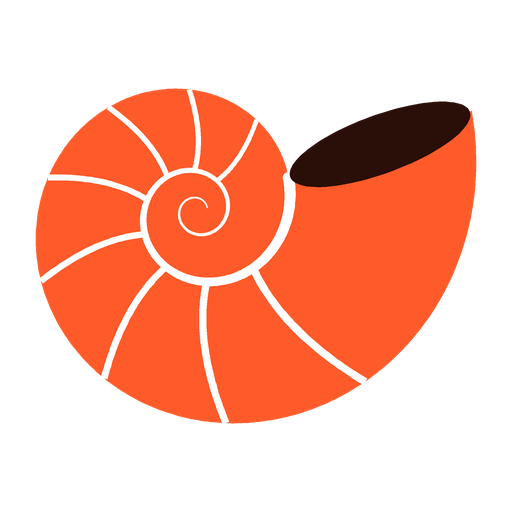
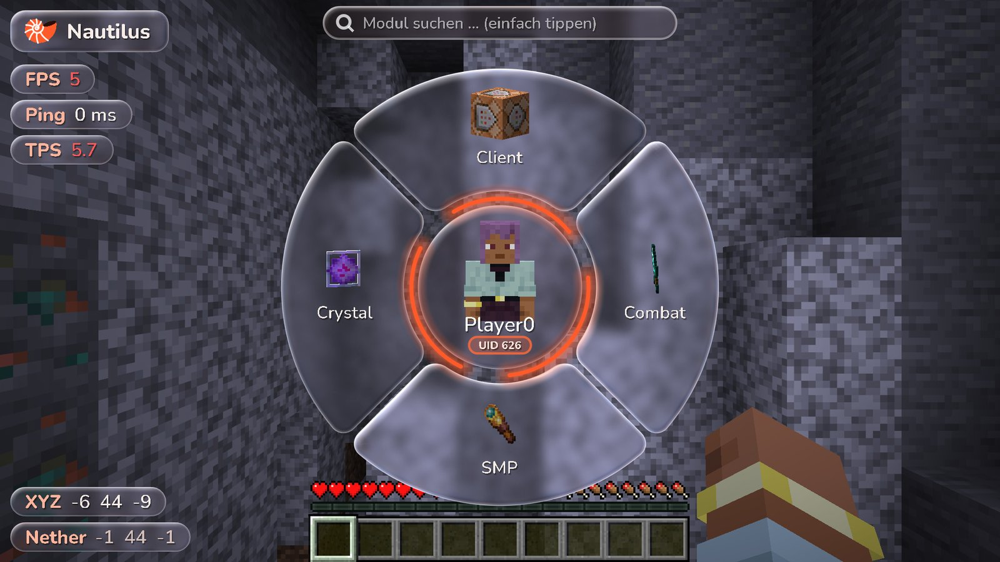

Radial menu
Right Shift opens the wheel: categories, modules and all settings right inside the wheel – with spinning 3D items and your 3D head following the mouse.

Nautilus ClientAlphaFabric client for Minecraft 26.3 – with a radial menu instead of a click GUI, real 3D icons, a glass design and a freely arrangeable HUD.

Right Shift opens the wheel: categories, modules and all settings right inside the wheel – with spinning 3D items and your 3D head following the mouse.
TriggerBot, Aimbot with prediction, SilentAim, SilentKillAura with invisible server-side rotation and an aggressive BlatantKillAura – plus Crystal PvP: AutoCrystal, AnchorMacro with SafeAnchor, AutoTotem and Surround.
XRay with fullbright and the BaseFinder: amethyst growth, sound blocks, storage, player blocks, portals and more – every hint can be toggled on its own.
Logo, module list, coordinates, FPS, ping, TPS, speed, direction, clock and notifications – arrange them by drag & drop, with snapping to edges.
Real glass blur and refraction behind the wheel and the HUD.
Simple glass – lighter and noticeably better FPS on weaker PCs. Switch it in the setup or under Client → HUD.
Run the Fabric installer and select Minecraft 26.3.
Download the Fabric API for 26.3.
Click Download above – you always get the latest build.
Copy both .jar files to .minecraft/mods, start the Fabric profile and press Right Shift.
Requires Java 25 (included with the Minecraft launcher). Nautilus Client starts with Sodium, but XRay does not work then and everything else is experimental.
All versions are alpha builds from ongoing development – every push automatically creates a new build.